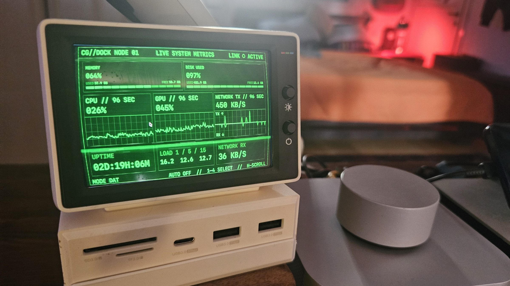
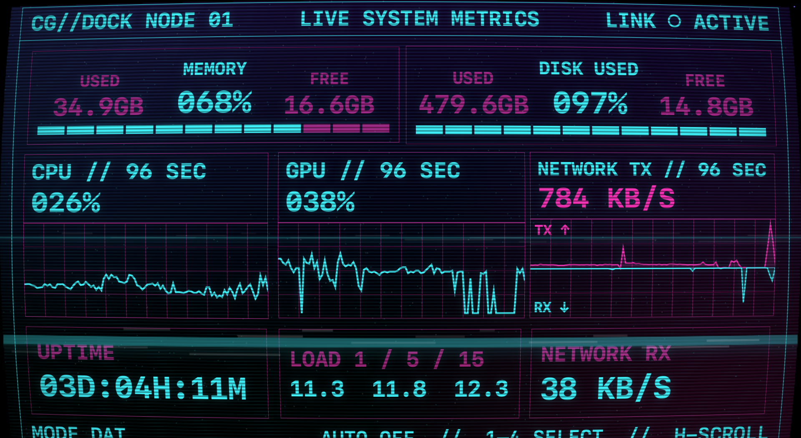
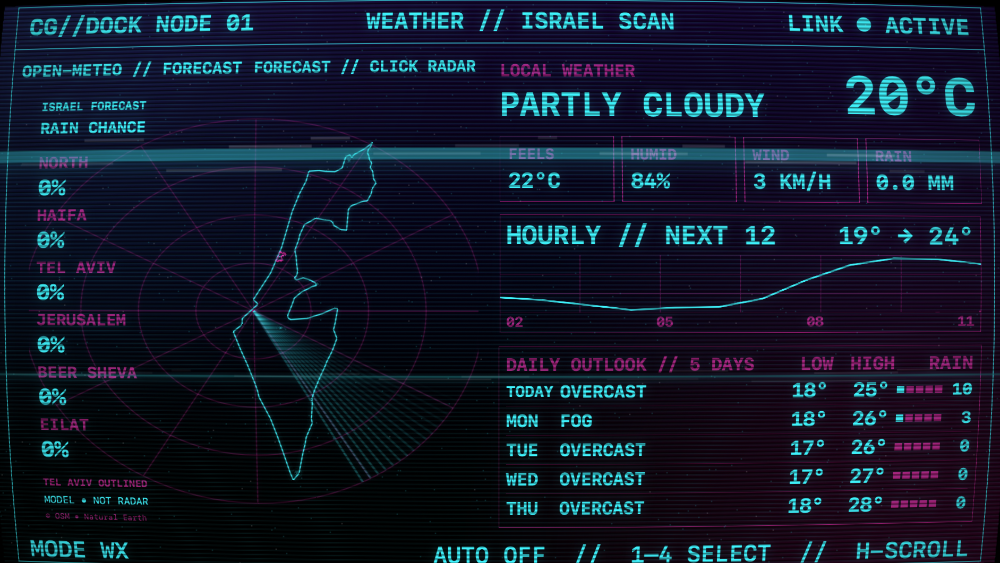
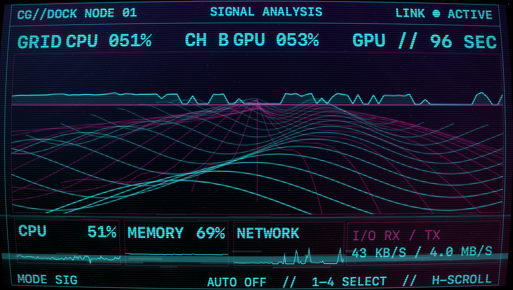
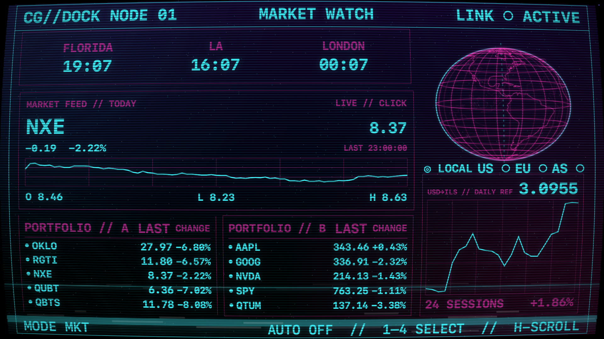

Your tiny
screen, alive.
A native retro console for your smaller second screen. Fits compact desk displays, iPad with Sidecar, and custom sizes.
macOS 14+ · Apple silicon & Intel · Free & open source
The first public download is in preparation. Source builds are available on GitHub.
Four views. One small screen.




Real readings
CPU, memory, disk, network, GPU counters, uptime and optional battery flow—shown locally without analytics.
Built for a second screen
Made for smaller displays, including iPad with Sidecar. Match your display, use a preset or set custom dimensions. It remembers its screen, returns after reconnection and stays hidden when that screen is away.
Make it yours
Move and resize modules, tune typography and CRT effects, reorder scenes, or switch between phosphor and synthwave.
Weather uses Open-Meteo with approximate or fixed public coordinates. Optional market quotes use your own Finnhub key stored in macOS Keychain. No accounts, ads, analytics or bundled credentials.